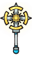
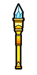
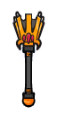
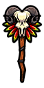
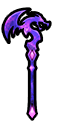
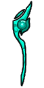
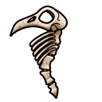
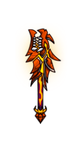
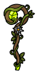
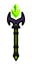

Staffs & Magical Rods Collection

Apprentice Orb Staff
Type: Magic Staff
Power: 15 Attack
Ability: Channels basic magical energy to fire small arcane projectiles.
Gnarled Wooden Rod
Type: Primitive Staff
Power: 12 Attack
Ability: A simple banded branch used by novice spellcasters in early battles.

Bound Timber Staff
Type: Primitive Staff
Power: 14 Attack
Ability: Reinforced with cloth wrappings for better grip and spell focus.

Necromancer's Skull Staff
Type: Dark Magic
Power: 42 Attack
Ability: Topped with a spiked skull that shoots dark energy bolts and drains life.

Solar Cross Wand
Type: Holy Magic
Power: 45 Attack
Ability: Radiates divine sunlight, effective against undead and dark monsters.

Gilded Crystal Scepter
Type: Elite Magic
Power: 48 Attack
Ability: Crafted from pure gold and topped with a glowing mana crystal for high spell damage.

Reaper's Curved Staff
Type: Dark / Melee Staff
Power: 38 Attack
Ability: A hooked scythe-topped staff allowing both sweeping melee and magical cuts.

Volcanic Crown Staff
Type: Fire Magic
Power: 50 Attack
Ability: Unleashes devastating magma shockwaves and burns enemies to ashes.

Demon Horn Staff
Type: Dark Magic
Power: 52 Attack
Ability: Channels demonic energies through spiked horns to fire explosive dark bolts.

Azure Dragon Scepter
Type: Elemental Magic
Power: 55 Attack
Ability: Topped with a glowing blue orb wrapped by a dragon wing, boosting elemental spell damage.

Crimson Dragon Rod
Type: Fire Magic
Power: 58 Attack
Ability: Features a fiery red orb cradled by ruby dragon wings, scorching foes on contact.

Glacial Trident Wand
Type: Water / Ice
Power: 49 Attack
Ability: Fires triple-pronged frost shards that freeze enemies in their tracks.

Gilded Dragon Scepter
Type: Elite Magic
Power: 60 Attack
Ability: An ancient golden staff infused with supreme dragon magic for massive arcane bursts.

Tribal Horned Totem
Type: Primitive Magic
Power: 44 Attack
Ability: Decorated with colorful tribal feathers and a ram skull to cast ancestral hexes.

Nebula Dragon Staff
Type: Void Magic
Power: 64 Attack
Ability: Shimmers with cosmic purple energy, tearing through enemy defenses with void beams.

Zephyr Vortex Wand
Type: Wind / Air
Power: 46 Attack
Ability: Curved pneumatic staff that summons whirling tornadoes to lift and toss enemies.

Gilded Dragon Scepter (Alt)
Type: Elite Magic
Power: 61 Attack
Ability: An alternate golden dragon-cradled orb radiating supreme arcane energy.

Tribal Horned Totem (Alt)
Type: Primitive Magic
Power: 45 Attack
Ability: Enhanced ritualistic ram skull staff decorated with vivid ceremonial feathers.

Nebula Dragon Staff (Alt)
Type: Void Magic
Power: 65 Attack
Ability: Infused with cosmic purple dimensions to unleash devastating void magic.

Zephyr Vortex Wand (Alt)
Type: Wind / Air
Power: 47 Attack
Ability: Pneumatic turquoise staff channeling swirling air currents to displace foes.

Avian Spine Wand
Type: Necromancy / Bone
Power: 39 Attack
Ability: Crafted from skeletal remains and a bird skull, casting chilling necrotic curses.

Eldritch Tentacle Rod
Type: Eldritch Magic
Power: 59 Attack
Ability: Topped with writhing green tentacles and a yellow gem that drives enemies mad.

Shadow Spine Scepter
Type: Dark Magic
Power: 54 Attack
Ability: Features a grinning dark skull atop a curved spinal column, draining enemy life force.

Infernal Dragon Jaw
Type: Fire Magic
Power: 62 Attack
Ability: Shaped like a ferocious magma dragon head, shooting volatile streams of molten fire.

Verdant Vine Staff
Type: Earth / Nature
Power: 40 Attack
Ability: Wrapped in enchanted vines with a glowing green crystal and daisy flower, launching earthy projectiles.

Lantern Flame Wand
Type: Fire
Power: 43 Attack
Ability: Shaped like an antique lantern, casting warm, burning light and scorching fire bursts.

Witch's Broomstick
Type: Event / Dark
Power: 45 Attack
Ability: A festive magical broom that sweeps away enemies with spooky kinetic energy.
Shard of Glacial Frost
Type: Water / Ice
Power: 46 Attack
Ability: Carved entirely from jagged magical ice crystals to freeze foes instantly.

Venomous Spire Rod
Type: Poison
Power: 42 Attack
Ability: Emits a glowing green acidic aura that infects enemies with continuous venom damage.

Abyssal Sea Serpent Staff
Type: Water / Magic
Power: 51 Attack
Ability: Coiled by a turquoise sea dragon guarding a glowing blue orb of tidal power.

Black Widow Scepter
Type: Venom / Dark
Power: 48 Attack
Ability: Features a menacing purple spider sigil that injects paralyzing venom into targets.

Monolithic Stone Rod
Type: Earth / Heavy
Power: 39 Attack
Ability: Topped with a heavy carved stone head capable of delivering crushing blunt force.

Wasteland Circular Smasher
Type: Survivor / Heavy
Power: 41 Attack
Ability: A rugged wooden rod wrapped in chains with a spinning sawblade head for brutal melee-magic hybrid strikes.

Gilded Eye Scepter
Type: Treasure / Elite
Power: 56 Attack
Ability: An ornate golden staff featuring an all-seeing magical eye that fires golden beams and increases loot drops.

Festive Holiday Wand
Type: Event / Holy
Power: 50 Attack
Ability: Wrapped in candy-cane patterns and holiday ribbons, shooting cheerful snow globes and festive magical sparks.